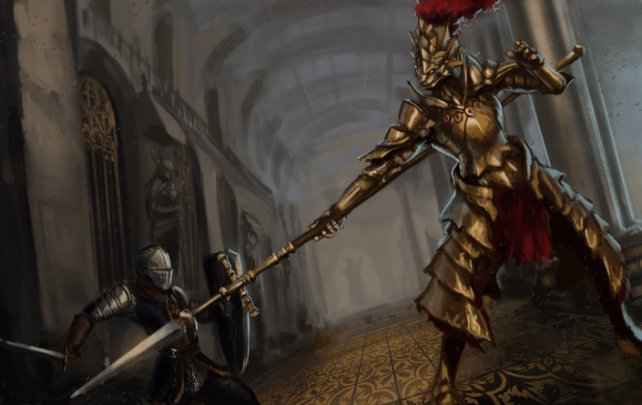

Ornstein el Asesino de dragones
Ornstein fue uno de los caballeros más confiables del Señor Gwyn, y el primer caballero elegido por su primogénito. Debido a su posición como capitán de los Cuatro Caballeros de Gwyn, el Gran Señor le concedió un alma especial y un anillo único.
Su armadura dorada de león estaba imbuida con el poder del relámpago.Se dice que su lanza alada fue capaz de partir una roca en dos.Después de que los dioses abandonaron Anor Londo, Ornstein y Smough el Verdugo se quedaron para proteger la catedral y a la Princesa de la Luz Solar.


En algún momento, Ornstein abandonó la catedral en busca del Rey Sin Nombre.No está claro el cómo Ornstein logró sobrevivir al combate contra el No muerto elegido, pero parece que finalmente encontró su camino hacia el Pico del Archidragón. Sin embargo, los resultados de su búsqueda, así como el propio destino de Ornstein, siguen siendo inciertos.